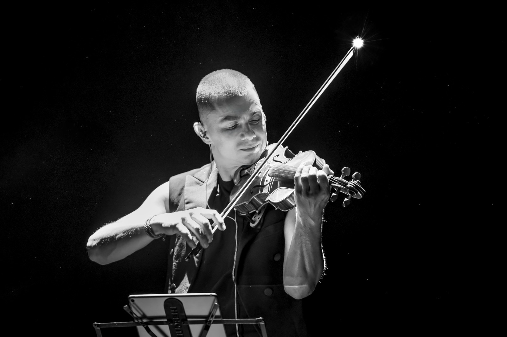
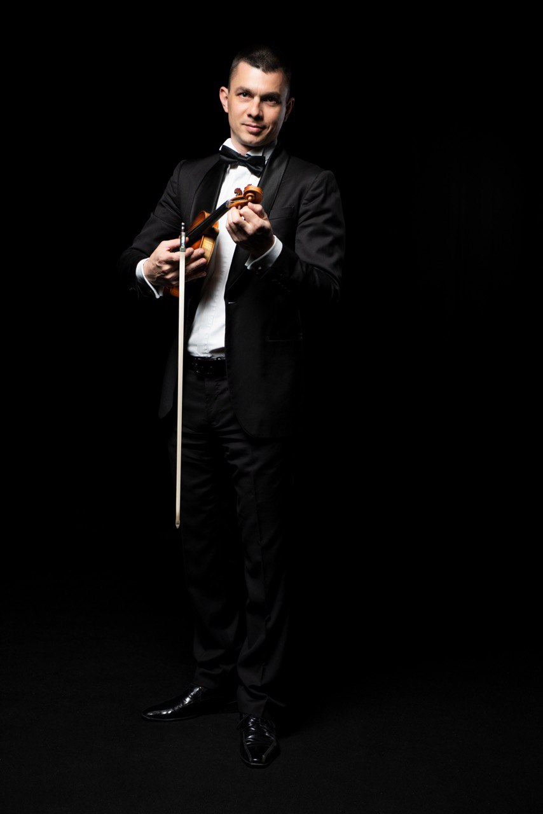
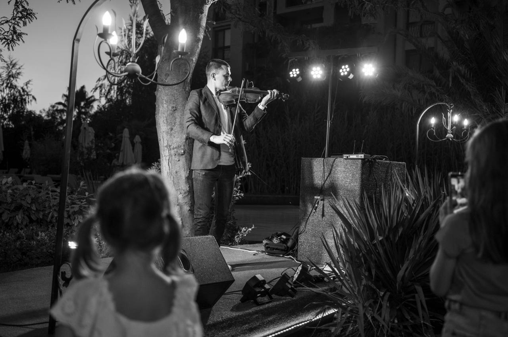
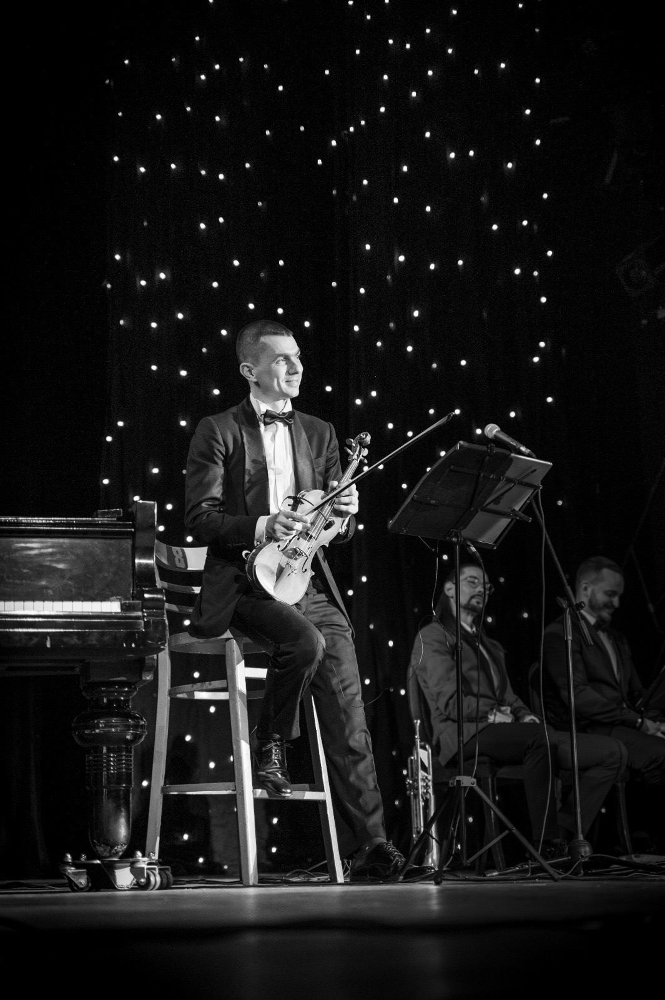
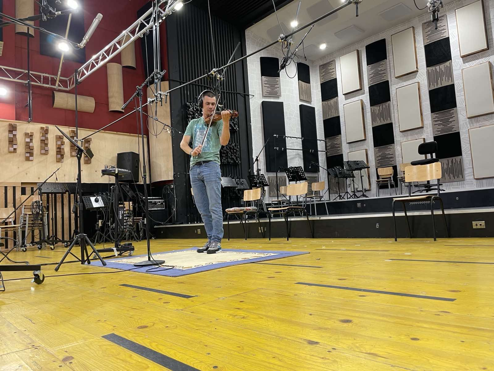

Частни празници
1 200 € / час
Лично музикално присъствие и репертоар, подбран за вашите гости.
Запитване за вашата датаМузика, която превръща миговете в скъпи спомени.
Цигулката отвъд очакваното.

ДОБРЕ ДОШЛИ
Между музиканта и публиката. Между познатата мелодия и усещането да я чуете по нов начин.
Тук можете да се запознаете с моя музикален път, да чуете избрани изпълнения и да намерите звученето за вашето събитие или проект.

ЗА МЕН
Аз съм Орлин Цветанов - цигулар, композитор и саунд дизайнер. В музиката търся дълбочината на класиката и свободата да откривам нови изразни средства.
От март 2005 г.
в екипа на Лили Иванова
Камерен ансамбъл
„Софийски солисти“
Tango Cats
Танго в състав от шестима
Концертният ми път преминава през различни сцени и жанрове - класика, джаз, фламенко, танго и поп музика. Във всяка среща с публиката нося този опит и своя личен прочит.
Музиката е част от живота ми от детството - израснал съм в семейство на музиканти. Образованието ми преминава през Националното музикално училище „Любомир Пипков“ и Националната музикална академия „Проф. Панчо Владигеров“ в класа по цигулка на проф. Ангел Станков. През 2003 г. специализирам барокова музика в Германия при проф. Анна Шуман.
От 2005 г. съм цигулар в екипа на Лили Иванова. В периода 2012-2025 г. работя в Камерен ансамбъл „Софийски солисти“. Като солист и камерен музикант съм изнасял концерти в Япония, Китай, Франция, Германия, Австрия, Испания и други страни.
Развивам проектите „Sonata Duo“ с пианиста Марин Гонев, „Класиката среща джаза“ със сестра ми Зорница Цветанова и „Tango Cats“ с Младен Тасков от 2017 г. Със Зорница издаваме албума „Dream of OZ“ през 2016 г. Аз съм и един от създателите на Bingo Symphony Orchestra.
Лауреат съм на Международния конкурс „Френска музика“ в Пловдив през 1999 г. Участвал съм във фестивалите „Варненско лято“, „Аполония“, Международния джаз фестивал в Банско и Jazz Fest Pamporovo. През 2018 г. водя майсторски класове в Китай.
Професионалният ми опит включва работа в Нов симфоничен оркестър, „Симфониета - София“ и Камерен оркестър „Орфей“ - Перник. Свирил съм с музиканти като Живко Петров, Стоян Янкулов, Михайл Йосифов, Веселин Веселинов-Еко и Живко Василев.
МУЗИКА ЗА ВАШЕТО СЪБИТИЕ
Има моменти, в които музиката събира вниманието, и други, в които деликатно съпровожда разговора. Намираме точния баланс за вашите гости.
Сдържана елегантност за приеми и гала вечери. Сценичен акцент за моментите, които заслужават внимание.
Запитване за събитиеПЪРВОТО ВПЕЧАТЛЕНИЕЕлегантен тон за посрещане на гости, премиери и бизнес срещи. Атмосфера, която предразполага.
Запитване за коктейлВАШИЯТ ЛИЧЕН ПОЧЕРКОбичана музика в нов прочит за поводите, които искате да отбележите по свой начин.
Запитване за празникВАЖНИТЕ МОМЕНТИПодбрани мелодии за церемонията, посрещането и празника - с внимание към вашата история.
Запитване за дата
Първите ноти задават тона. Гостите влизат в атмосфера, създадена с внимание.
Откриване, церемония или специално появяване - музиката насочва вниманието.
Изискано присъствие, което оставя място за разговор и придава характер на вечерта.
Енергията се събира в последно изпълнение. Ярък завършек на вашето събитие.
ФОРМАТИ И УСЛОВИЯ
Соло цигулка или диалог с гост-музиканти. Избираме състава, репертоара и продължителността според вашия замисъл.
Един час, час и половина или два часа музика на живо.
Продължителността и разпределението на сетовете се уточняват според събитието.
Акустична или електрическа цигулка със съвременни подложки.
Цигулка и пиано, кавал, арфа или по-голям състав - според замисъла на вечерта.
Музика за първите срещи и разговори, коктейла или вечерята. Продължителността и програмата се съобразяват с повода.
1 200 € / час
Лично музикално присъствие и репертоар, подбран за вашите гости.
Запитване за вашата дата1 600 € / час
Съвременно звучене за приеми и фирмени събития. Подходящо и за welcome drink.
Обсъдете вашето събитие800 € / участие
При регулярни ангажименти условията се договарят индивидуално.
Обсъдете сътрудничествоПосочените суми са нетен хонорар за 60 минути музика, без ДДС. Начинът на договаряне и общата сума за възложителя се уточняват в индивидуалната оферта.
Осигурявам сценично облекло, акустична или електрическа цигулка и предварително подготвен репертоар. Използвам компютър с предварително миксирани инструментални тракове (подложки) и малък миксер. Към озвучителната система подавам стерео сигнал - ляв и десен канал - чрез два кабела.
Подходяща озвучителна система и озвучител. Пътните разходи и необходимите нощувки се поемат отделно от хонорара.
С ВНИМАНИЕ КЪМ ДЕТАЙЛИТЕ
Споделяте дата, място, повод и ориентировъчен брой гости.
Обсъждаме формат, продължителност и музикално настроение.
Уточняваме предложението, ключовите моменти и техническата подготовка.
Музиката заема своето място във вашето събитие - с подготовка и сценичен усет.
Координираме музикалната програма с вашия организатор или водещ.
ИЗБРАНИ ИЗПЪЛНЕНИЯ
С Лили Иванова, Tango Cats, в спектакъла за Емил Димитров, със Surbahar и Bingo Symphony Orchestra. Авторска музика в Dream of OZ.
ЛИЛИ ИВАНОВА
Изпълнения от концертите и наградите на БГ Радио.
TANGO CATS · ОТ 2017 ГОДИНА
Глас, цигулка, пиано, бандонеон, бас и барабани - жив диалог с финес и енергия.
За различен прочит на вечерта каним гост-музиканти с вокални, етно или джаз акценти. Програмата се оформя около вашия повод.
Поканете Tango CatsУчастието на гостите се уточнява според програмата и събитието.
Танцуват Lorena Tarantino и Vladislav Petrov.

СЦЕНИЧЕН ПРОЕКТ
На Ники Априлов
Моето участие в спектакъла, посветен на Емил Димитров - един от сценичните проекти в моя музикален път.
ВИДЕО · 2018
Complete Metamorphosis
Още една посока в моята музикална работа - в проекта на Павел Стойчев.
Гледайте видеото в YouTube · нов разделМУЗИКАЛЕН ПРОЕКТ
Среща на класика, джаз и рок.
Аз съм един от създателите на състава. Музиката му преминава свободно между жанровете и намира нови форми на сцената.
Разгледайте сайта на оркестъра · нов разделАЛБУМ · 2016
Зорница и Орлин Цветанов
Общият ни албум. Започнете със „Софийско потайно танго“ и продължете към останалите пиеси.
Слушайте албума в YouTube · нов разделСТУДИЙНИ ЗАПИСИ

Понякога една цигулкова фраза е достатъчна, за да се чуе историята по различен начин.
Записвам цигулкова партия специално за вашата песен, композиция или звуков проект - с внимание към неговия собствен характер.
ИНДИВИДУАЛНИ ОНЛАЙН УРОЦИ
Лично внимание и последователна работа върху вашето звучене.
Започваме от вашия опит и цели. Развиваме техниката, музикалния слух и интерпретацията чрез пиеси, съобразени с нивото ви.
МАЛЪК ПАКЕТ
199 € за пакета
Начало на съвместната ни работа или фокус върху конкретна музикална задача.
СРЕДЕН ПАКЕТ
379 € за пакета
Повече време за изграждане на навици, увереност и устойчив напредък.
ГОЛЯМ ПАКЕТ
499 € за пакета
Продължителна работа за задълбочаване на техниката и музикалния израз.
ПЪРВА СРЕЩА
15-20 минути · Безплатно
Запознаваме се, обсъждаме вашите цели и виждате как протича работата ни.
Обадете се за уговоркаЕДНОКРАТНА СРЕЩА
45 минути · 50 €
За конкретен въпрос, пиеса или самостоятелна среща извън пакетите.
Изберете свободен часИзберете свободен час в календара. След записване ще уточним по имейл пакета, начина на плащане и връзката за урока. За пробен урок или въпроси се обадете на: +359 888 855 035.
След записване на час уточняваме по имейл дали желаете единичен урок или пакет и как ще заплатите. Календарът не изисква онлайн плащане.
Пакетите нямат краен срок. Ако направите пауза, неизползваните уроци остават на ваше разположение.
Часовете са от понеделник до петък между 17:00 и 19:00 ч., по времето в България, според свободните места. Един урок седмично е добра отправна точка; ритъмът се уточнява индивидуално.
Всеки редовен урок - в пакет или единичен - продължава 45 минути. Пробната среща е 15-20 минути и служи за запознаване с начина на работа.
Уроците се провеждат чрез Discord или друго приложение, удобно и за двете страни. Връзката за разговора се уточнява по имейл след записване.
Цигулка и лък, компютър с камера и микрофон, стабилна интернет връзка и спокойно място за свирене. Подгответе кадъра така, че да се виждат инструментът и двете ви ръце. Не е нужно специализирано студийно оборудване.
Работата се съобразява с нивото ви, включително ако започвате без музикална подготовка. Ако още нямате инструмент, обсъдете избора с мен преди първия урок.
НЕКА ПОГОВОРИМ
Ще се радвам да чуя какво подготвяте. Разкажете ми за повода или проекта - ще обсъдим музиката, възможностите и важните за вас детайли.
София, България
Ангажиментът се потвърждава след лично уточняване.